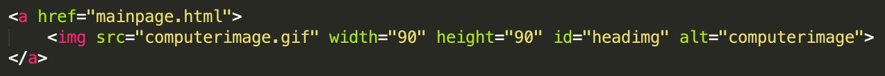
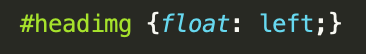
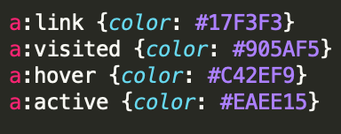

Did you notice that when you click on certain text on our site, it changes colors? That's the magic of hyperlinks! You can add bullet points, change the colors based on different states of the link and even make pictures a link! The possibilities are endless and you can customize it however you want! Try and click the computer gif in the top left corner, and see what happens.
I hope you clicked on the gif, and then came back, otherwise this would be embarrassing. If you did, thank you. It took you back to our homepage, so no matter where you are in the website you can always find your way back to something familiar (which is something we will talk about in our Best Practices page as well). Think about other sites you use, do they use icons and logos as links? Chances are they do, as it is easy to implement and helps users when they might get lost.
Are you curious how to do it? Well, you are in luck, because we are going to teach you! Here is a snippet of our code from the site, we're going to break it down to show you how we did it.
The first piece we're going to look at is the anchor tag, which is denoted with the letter a. All tags start and end with an < (open bracket) and a > (close bracket). After the anchor, is the href, which is short for Hyperlink Reference. When coding, you don't want to type everything out, so languages use shortcuts and nicknames for commonly used words and phrases. The href is equal to "mainpage.html", which is our file name for our home page. So when we specify that the gif will be clickable part of the link, it will take you back home!
Up next is the gif itself. To insert an image, you would use an img tag. It prompts you to give it a source, which in our case is called "computerimage.gif". You can specify the height and width of your image to make it exactly what you want it to be, we wanted a small square icon that was 90x90.
This last bit is important, the ID and alternate name for the image. The id is used to allow CSS to alter the image. For this gif, we didn't need to use too much CSS code but want to make sure it is on the left side of the header.
The alternate tag specifies an alternate text for an image. If someone was unable to see your image for various reasons, the alt information would show up and give them an insight into what the image was.
Now that you know how to make an image a link, let's talk about changing the color of one! It's quite simple, especially after learning about using a CSS style sheet. If you missed that, click here to go to our CSS page so you can learn a little, and then return with your newfound knowledge!
If you left and returned, welcome back, and if you already knew about style sheets, well then what are we waiting for? For our site, we chose to have four different states for our links; original, visited, hover and active. The original state is a link that is fresh and hasn't been touched. When you look something up, and you see a list of websites for your search, some of them might be purple while others are blue. The blue ones are new sites you haven't been to and the purple ones are in your history. That is exactly what link and visited do, and you've experienced it many many times before! Hover and active might be a bit new to you. The hover feature activates when your mouse is ~hovering~ over the link, you'll notice the color changes to a pink-purple and goes away when you move your mouse. The last state we included was active, this happens when you are in the action of clicking the link, it turns a bright yellow. Here's a clip of our code, to show you the syntax of the CSS. Not many are fluent in Hex color codes, like me, but if you are you'll know that those colors do indeed correspond to their respective states.
There you go, there's your lesson on hyperlinks, while there is still so much that we didn't touch on and so much that we don't know, this is a good basis to start on. If you would like to learn more, you can check out our more information page or find your own sources.